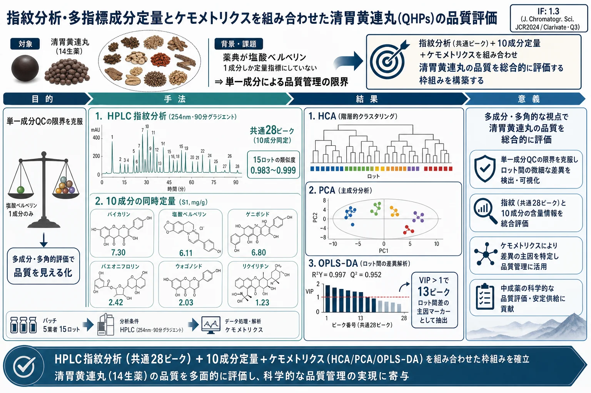
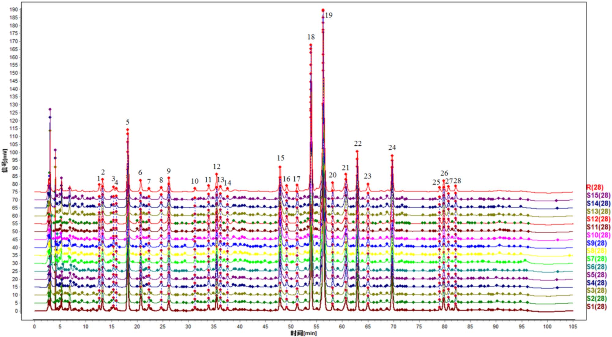
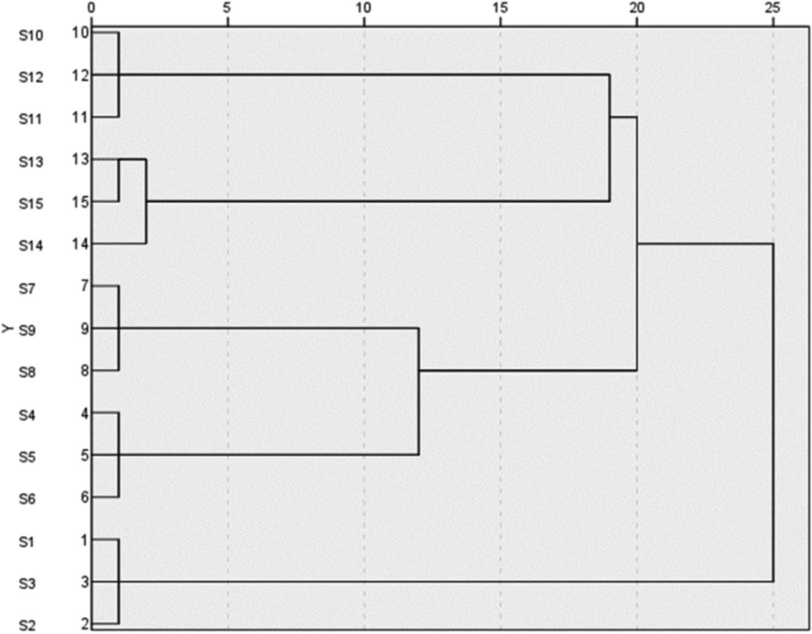

指紋分析・多指標成分定量とケモメトリクスを組み合わせた清胃黄連丸(QHPs)の品質評価

<!-- 方針: ほぼ全訳＋必要に応じた補足。原文構成に沿って訳出。「> 補足:」は訳者注。 -->
書誌情報
- 原題: Quality Evaluation of Qingwei Huanglian Pills Based on Fingerprint and Quantitative Analysis of Multi-Index Components Combined with Chemical Pattern Recognition Analysis
- 著者: Xiaowei Shao¹, Nan Zhao²（責任著者）, Yuping Li¹, Hongming Wang¹, Xueli Xu¹, Shuyue Wang²
- 所属: ¹濱州検査検測センター（山東省濱州市濱城区）／²濱州市中医院 薬剤科（同）
- 掲載: Journal of Chromatographic Science, 2025, 63(4), bmaf018. https://doi.org/10.1093/chromsci/bmaf018
- インパクトファクター: 1.3（Journal of Chromatographic Science, JCR 2024 / Clarivate, Q3・分析化学分野）
- 受領 2025-02-27 / 編集判定 2025-03-06 / © The Author(s) 2025, Oxford University Press
- 助成: 濱州医学院「中医薬特別」科技創新プロジェクト（2023ZYZX014）
補足: 清胃黄連丸（Qingwei Huanglian Pills, QHPs）は、黄連（Coptis chinensis）・石膏・黄芩（Scutellaria baicalensis）・山梔子（Gardenia）・甘草（licorice）など14種の生薬からなる中国の伝統的な水丸（水練り丸剤）で、肺胃の熱による口内炎・舌の潰瘍・歯肉腫脹・咽頭腫脹に用いられる。清胃・瀉火・解毒・消腫の作用をもつとされる。本論文は、単一マーカー（塩酸ベルベリン）に依存する現行の品質基準を補うため、HPLC指紋・多成分定量・化学パターン認識（ケモメトリクス）を組み合わせて総合的に品質を評価した2025年の研究。
要旨（Abstract）
清胃黄連丸（QHPs）は口内炎・舌瘡の治療に最も一般的に用いられる伝統中薬製剤の一つであるが、既存の品質評価基準にはいくつかの不足・欠陥がある。有効かつ科学的な品質評価法は、医薬品の安全性確保に決定的な役割を果たす。本研究では、指紋分析と多指標成分の定量分析を化学パターン認識分析と組み合わせて、QHPs の品質を総合的に評価した。15 ロットの QHPs の指紋を作成して類似度を評価し、10 本の特徴ピークを同定した。階層クラスター分析（HCA）・主成分分析（PCA）・直交部分最小二乗判別分析（OPLS-DA）を用いて 15 ロットをクラスタリング・順位付けし、同時にロット間差の原因となる成分を同定した。QHPs の HPLC 指紋と、10 成分の含量測定法を確立した。共通ピークは 28 本が同定され、うち 10 成分が特定された。15 ロット間の類似度は 0.983〜0.999 であった。HCA と PCA によりそれぞれ 15 ロットのクラスター分析と総合スコアによる順位付けを行い、OPLS-DA によりロット間差に影響する 13 の化学マーカーをスクリーニングした。本研究で確立した手法は、QHPs の品質評価と製品品質管理の参考となりうる。
序論（Introduction）
中国における口腔潰瘍の発生率は 25〜30% に及び、その病因は遺伝・環境・免疫機能など多様な要因を含み複雑である。口内炎・舌瘡・歯肉腫脹・咽頭痛などの症状は、摂食や発話の困難につながり、患者の生活の質を大きく損なう。QHPs は黄連（Coptis chinensis）・山梔子（Gardenia）・黄芩（Scutellaria baicalensis）・甘草（licorice）を含む 14 生薬から作られる伝統中薬製剤で、水丸に加工される。肺胃の熱による口内炎・舌瘡・歯肉腫脹・咽頭腫脹の治療に一般的に用いられる。清胃・瀉火・解毒・消腫の作用をもち、歯周・口腔潰瘍の有効な治療薬である。2023 年には QHP の売上が 52 億元を超え、伝統中薬における幅広い使用が示されている。したがって、この製剤の全体的な品質を反映する手法の確立は極めて重要であり、品質を評価するための管理法・指標の開発は、安定的で信頼できる医薬品品質の確保に不可欠である。
QHP は中国薬典 2020 年版（第一部）に収載されているが、現状では塩酸ベルベリン 1 成分のみが定量指標成分として用いられている。単一成分の管理に依存すると、製剤の品質を包括的に評価することは難しい。その結果、多指標成分の測定が複方製剤の品質評価において増加傾向にある。指紋分析は、複方製剤の品質を客観的に評価するために伝統中薬で広く応用されており、成分の特徴・追跡可能性・測定可能性を明らかにし、全体的・動的・包括的な利点をもたらす。化学パターン認識技術は指紋情報をさらに精緻化・解析し、これらの手法を組み合わせることで製剤の品質をより直観的かつ正確に反映できる。
製品のロット間品質安定性は、臨床的等価性と有効性を確保する上で決定的な要因である。本研究では、HPLC を用いて 15 ロットの QHPs の指紋プロファイルを確立し、10 成分の含量を測定した。同時に、階層クラスター分析（HCA）・主成分分析（PCA）・直交部分最小二乗判別分析（OPLS-DA）といった化学パターン認識解析モードを組み合わせ、QHPs のロット間安定性を包括的・体系的に評価した。これにより、製剤の品質安定性と臨床効果の一貫性に関する研究アイデアを提供する。
実験（Experimental）
装置・試薬
装置とソフトウェア
使用機器は、島津 LC-20AD 高速液体クロマトグラフ、Mettler XS205Du 電子天びん（Mettler）、Kunshan Shumei KQ-700 DV 超音波洗浄機（昆山超声儀器有限公司）。0.22 µm 微孔ろ過膜は天津色譜科技有限公司より供給された。解析に用いたソフトウェアは、「伝統中薬クロマト指紋類似度評価システム」（Version A, 2004）、SIMCA 14.1、SPSS 27.0。
医薬品・試薬
ゲニポシド（ロット 110749-2011919, 純度 97.1%）、パエオニフロリン（110736-202044, 96.8%）、リクイリチン（111610-201106, 93.7%）、塩酸コプチシン（112026-201601, 95.1%）、バイカリン（110715-201821, 95.4%）、塩酸ベルベリン（110713-201613, 86.8%）、ウォゴノシド（112002-201702, 98.5%）、パエオノール（110708-200506, 100.0%）、バイカレイン（111595-201808, 97.9%）、ハンバイカリン（111514-201706, 100.0%）は、いずれも中国食品薬品検定研究院（National Institutes for Food and Drug Control）より入手した。メタノールとアセトニトリル（クロマトグラフィーグレード）は TEDIA Limited より購入し、リン酸（分析グレード）は天津科密化学試剤有限公司より供給された。実験には超純水を用いた。
計 15 ロットの試料を 5 社の製造業者から収集した：S1〜S3 は甘粛 Foren 製薬科技有限公司、S4〜S6 は陝西華康製薬有限公司、S7〜S9 は山東孔聖堂製薬有限公司、S10〜S12 は北京同仁堂製薬有限公司、S13〜S15 は山西王龍製薬集団有限公司。15 ロットの詳細情報を Table I に示す。
Table I. 15 ロット試料の情報。
| 通し番号 | ロット番号 | 製造年月日 | 有効期限（文書上） |
|---|---|---|---|
| S1 | 231201 | 2023-12-05 | 2025-11 |
| S2 | 230901 | 2023-09-05 | 2025-08 |
| S3 | 240402 | 2024-04-10 | 2026-03 |
| S4 | 20240503 | 2024-05-10 | 2027-04 |
| S5 | 20240210 | 2024-02-22 | 2027-01 |
| S6 | 20231102 | 2023-11-07 | 2026-10 |
| S7 | 24022014 | 2024-02-21 | 2026-02-20 |
| S8 | 23122014 | 2023-12-20 | 2025-12-19 |
| S9 | 23052012 | 2023-05-15 | 2025-05-14 |
| S10 | 22081124 | 2022-09-02 | 2026-08 |
| S11 | 22081121 | 2022-08-25 | 2026-07 |
| S12 | 24081365 | 2024-07-05 | 2028-06 |
| S13 | 20221109 | 2022-11-26 | 2025-10 |
| S14 | 20221005 | 2022-10-18 | 2025-09 |
| S15 | 20230807 | 2023-08-23 | 2026-07 |
補足: 原文の Table I ではロット番号に桁区切りのカンマが混入している（例 "231,201"、"23,052,012"）。これは英語圏の3桁区切り表記が誤って付いたもので、実際のロット番号は連続した数字列（231201, 23052012 等）と判断し、上表ではカンマを除いて転記した。
クロマトグラフィー条件
クロマト分離は InertSustain C18 カラム（4.6 mm × 250 mm, 5 µm）で行った。移動相はメタノール（A）・アセトニトリル（B）・0.2% リン酸溶液（C）からなり、以下のグラジエント溶出プログラムを用いた：
| 時間（min） | A（メタノール） | B（アセトニトリル） | C（0.2% リン酸） |
|---|---|---|---|
| 0–40 | 5% → 5% | 5% → 20% | 90% → 75% |
| 40–60 | 5% → 10% | 20% → 30% | 76% → 65% |
| 60–80 | 10% → 5% | 30% → 55% | 60% → 40% |
| 80–90 | 5% → 10% | 55% → 5% | 40% → 90% |
流速は 1.0 mL/min、検出波長は 254 nm、カラム温度は 35 ℃、注入量は 10 µL とした。
補足: 原文のグラジエント記述では、40 分時点で C 相が「75%」だが 40–60 分区間の C 開始値が「76%」と表記されており、区切り点で 1% ずれている。同様に 60–80 分の C 開始が「60%」で 40–60 分終了の「65%」と不連続である。原文ママを転記した（おそらく表記上の丸め・誤植）。各区間で A+B+C の合計が 100% になる想定。
方法（Methods）
溶液の調製
対照品溶液の調製: ゲニポシド・パエオニフロリン・リクイリチン・塩酸コプチシン・バイカリン・塩酸ベルベリン・ウォゴノシド・パエオノール・バイカレイン・ハンバイカリンの各対照標準品を精密に秤量し、各標準品をメタノールに溶解してストック溶液を調製した。調製溶液の濃度は次のとおり：ゲニポシド 106.810 µg/mL、パエオニフロリン 23.584 µg/mL、リクイリチン 10.051 µg/mL、塩酸コプチシン 10.375 µg/mL、バイカリン 136.335 µg/mL、塩酸ベルベリン 52.238 µg/mL、ウォゴノシド 31.878 µg/mL、パエオノール 12.361 µg/mL、バイカレイン 10.057 µg/mL、ハンバイカリン 11.727 µg/mL。
試料溶液の調製: QHP 1 包を粉砕機で細かく粉砕した。粉末約 0.5 g を精密に秤量して共栓三角フラスコに移し、メタノール 50 mL を加えて秤量し、超音波処理（300 W, 45 kHz）を 30 分間行った。室温まで冷却後に再秤量し、減量分をメタノールで補った。よく振り混ぜ、0.22 µm 微孔膜でろ過し、ろ液を試料溶液とした。
指紋マッピング研究
15 ロットの QHPs の指紋を測定し、クロマトグラムを「伝統中薬クロマト指紋類似度評価システム」（Version A, 2004）に取り込んで解析・評価した。試料 S3 のクロマトグラムを対照クロマトグラム（R）とし、タイムウィンドウ幅を 0.1 とした。
化学パターン認識
- 階層クラスター分析（HCA）: 15 ロットの QHPs の HCA を IBM SPSS Statistics（Version 27.0）で実施した。28 本の共通ピーク面積を標準化し、群間結合法（inter-group join）と平方ユークリッド距離を試料間類似度の尺度として用いた。
- 主成分分析（PCA）: 15 ロットの 28 共通ピークの正規化ピーク面積を SPSS 27.0 に取り込み、KMO 検定と Bartlett の球面性検定でデータの適合性を確認した。KMO 値は 0.895（1 に近いほど変数間相関が強い）、Bartlett 検定の p 値は 0.05 未満で、変数間に有意な相関があり主成分因子分析に適していることが確認された。
- 直交部分最小二乗判別分析（OPLS-DA）: OPLS-DA は教師あり判別分析で、群内変動が大きく群間差が小さい場合に PCA より判別に適する。異なる製造業者・ロット間の化学組成差をさらに調べるため、28 共通ピークの標準化ピーク面積を従属変数、製造業者・ロットを独立変数とし、SIMCA 14.1 で OPLS-DA 処理した。
多指標成分の含量測定
- 特異性（Speciality）: 試料溶液と対照溶液を精密に測り、上記クロマト条件で分析した。
- 直線範囲: 各対照ストック溶液を 1・2.5・5・10・25 mL ずつ精密に 25 mL メスフラスコ 6 本にとり、メタノールで標線まで定容して異なる濃度の混合対照溶液を調製した。HPLC に注入し、各成分のピーク面積（Y）を濃度（X）に対して直線回帰した。
- 精度（Precision）: 対照溶液を連続 6 回注入した。
- 併行精度（Repeatability）: 丸剤 6 個（ロット 24022014）を精密に秤量し、試料溶液を調製して分析した。
- 回収率試験（Sample recovery）: QHPs（ロット 24022014）約 0.25 g を 6 試料精密に測り、対照ストック溶液を各種容量（2.2, 3.6, 3.6, 3.3, 2.5, 3.9, 2.3, 2.5, 1.6, 1.0 mL）添加し、試料溶液を調製・分析した。回収率＝回収量／添加量で算出した。
- 多指標成分の含量測定: クロマト条件に従い、15 ロットについてゲニポシド・パエオニフロリン・リクイリチン・塩酸コプチシン・バイカリン・塩酸ベルベリン・ウォゴノシド・パエオノール・バイカレイン・ハンバイカリンの含量を測定した。
結果（Results）
指紋マッピング
指紋分析により計 28 本の共通ピークを同定し、うち No.18（バイカリン）は、ピーク面積が大きく保持時間が安定し隣接ピークとの分離も良好という利点を示した。28 共通ピークの保持時間の RSD は 0.32% 未満、ピーク面積の RSD は 7.73〜44.72% の範囲であった。この結果は、15 ロットにわたる 28 共通成分の保持時間が比較的安定である一方、ロット間で含量に差があることを示す。指紋プロファイルを Fig. 1 に、対照品のクロマトグラムを Fig. 2 に示す。
保持時間と紫外吸収スペクトルの比較により、10 成分を同定した：ピーク No.5＝ゲニポシド、No.8＝パエオニフロリン、No.11＝リクイリチン（グリチルリチン）、No.15＝塩酸コプチシン、No.18＝バイカリン、No.19＝塩酸ベルベリン、No.22＝ウォゴノシド、No.23＝パエオノール、No.24＝バイカレイン、No.26＝ハンバイカリン。
補足: 原文本文には内部矛盾がある。指紋の説明冒頭で「peak No.18（baicalin）」と明記される一方、直後のピーク帰属リストでは「Peak No.18 was identified as baicalein」とバイカレインになっている。しかし Table IV（成分負荷行列）ではピーク 18＝baicalin、ピーク 24＝baicalein と整理されており、Table VI・VII の定量成分の並び順（バイカリン→…→バイカレイン→ハンバイカリン）とも整合する。したがって No.18＝バイカリン、No.24＝バイカレインが正しいと判断し、本訳ではそのように統一した（原文の帰属リストの "baicalein" は baicalin の誤記）。
15 ロットの指紋と対照指紋の類似度を算出した（Table II）。薬典委員会によれば、類似度 90% 超で類似度評価要件を満たすとみなせる。15 ロットの類似度は 0.983〜0.999 で、いずれも 0.900 を超えた。これは 5 社の試料の品質が一貫して安定していることを示す。高い類似度は、製造工程が良好に管理され、製剤の全体品質が高いことも示唆する。

Table II. 15 ロット試料の類似度結果。
| 通し番号 | 類似度 | 通し番号 | 類似度 | 通し番号 | 類似度 |
|---|---|---|---|---|---|
| S1 | 0.992 | S6 | 0.986 | S11 | 0.983 |
| S2 | 0.992 | S7 | 0.996 | S12 | 0.983 |
| S3 | 0.993 | S8 | 0.995 | S13 | 0.999 |
| S4 | 0.987 | S9 | 0.997 | S14 | 0.997 |
| S5 | 0.985 | S10 | 0.984 | S15 | 0.996 |
階層クラスター分析（HCA）
結果を Fig. 3 に示す。ユークリッド距離が 20〜25 のとき、15 ロットは 2 クラスに分かれる：S1〜S3 が第 1 クラス、S4〜S15 が第 2 クラスである。

主成分分析（PCA）
固有値 1 超を選定基準とし、4 つの主成分因子が抽出され、その累積寄与率は 97.859% であった（Table III）。この 4 因子が、QHPs の 28 共通ピークの指紋プロファイルの本質的特徴と大半の情報を代表することを示す。
Table III. PCA の固有値と寄与率。
| 主成分 | 固有値 | 寄与率（%） | 累積寄与率（%） |
|---|---|---|---|
| 1 | 11.698 | 41.780 | 41.780 |
| 2 | 6.986 | 24.951 | 66.731 |
| 3 | 5.634 | 20.121 | 86.852 |
| 4 | 3.082 | 11.007 | 97.859 |
成分負荷行列は、4 主成分と 28 共通ピークの相関係数を示す。負荷の絶対値が大きいほど主成分への寄与が大きい（Table IV）。負荷の絶対値 >0.6 を閾値として原変数と 4 因子の相関を解析した結果：主成分 1 は主にピーク 2, 4, 5, 8–9, 11, 14–16, 18, 20–22, 26, 28 の情報を、主成分 2 はピーク 1, 5, 17, 24, 27 を、主成分 3 はピーク 3, 6, 7, 10, 12, 13, 19 を、主成分 4 は主にピーク 23, 25 を反映する。
Table IV. 15 ロット QHPs の成分負荷行列。（各ピークの主成分負荷。太字＝同定成分。閾値 0.6 超が寄与大）
| ピーク | 成分 | PC1 | PC2 | PC3 | PC4 |
|---|---|---|---|---|---|
| 1 | 未同定 | 0.507 | 0.746 | 0.375 | 0.203 |
| 2 | 未同定 | 0.711 | 0.478 | 0.045 | 0.494 |
| 3 | 未同定 | 0.411 | 0.452 | 0.625 | 0.483 |
| 4 | 未同定 | 0.933 | 0.203 | 0.158 | 0.162 |
| 5 | ゲニポシド | 0.701 | 0.685 | 0.063 | 0.143 |
| 6 | 未同定 | 0.183 | 0.497 | 0.793 | 0.295 |
| 7 | 未同定 | 0.580 | 0.213 | 0.774 | 0.069 |
| 8 | パエオニフロリン | 0.768 | 0.383 | 0.371 | 0.328 |
| 9 | 未同定 | 0.624 | 0.630 | 0.457 | 0.049 |
| 10 | 未同定 | 0.428 | 0.305 | 0.754 | 0.373 |
| 11 | リクイリチン | 0.666 | 0.450 | 0.414 | 0.376 |
| 12 | 未同定 | 0.557 | 0.516 | 0.583 | 0.286 |
| 13 | 未同定 | 0.228 | 0.018 | 0.893 | 0.099 |
| 14 | 未同定 | 0.810 | 0.461 | 0.117 | 0.250 |
| 15 | 塩酸コプチシン | 0.740 | 0.452 | 0.300 | 0.393 |
| 16 | 未同定 | 0.754 | 0.238 | 0.560 | 0.170 |
| 17 | 未同定 | 0.113 | 0.953 | 0.062 | 0.114 |
| 18 | バイカリン | 0.942 | 0.264 | 0.135 | 0.132 |
| 19 | 塩酸ベルベリン | 0.322 | 0.491 | 0.663 | 0.452 |
| 20 | 未同定 | 0.870 | 0.310 | 0.269 | 0.267 |
| 21 | 未同定 | 0.867 | 0.448 | 0.127 | 0.167 |
| 22 | ウォゴノシド | 0.964 | 0.110 | 0.015 | 0.231 |
| 23 | パエオノール | 0.443 | 0.173 | 0.480 | 0.723 |
| 24 | バイカレイン | 0.383 | 0.806 | 0.260 | 0.366 |
| 25 | 未同定 | 0.529 | 0.371 | 0.264 | 0.713 |
| 26 | ハンバイカリン | 0.797 | 0.135 | 0.451 | 0.367 |
| 27 | 未同定 | 0.159 | 0.952 | 0.220 | 0.101 |
| 28 | 未同定 | 0.756 | 0.588 | 0.175 | 0.028 |
主成分負荷から 4 主成分の線形モデル（F1〜F4）を導出した。X1〜X28 は 28 共通ピーク面積の標準化値、F1〜F4 は各主成分スコアである（係数は原文の通り。以下は主成分ごとのスコア式）：
- F1 = 0.148X1 + 0.208X2 + 0.120X3 + 0.273X4 + 0.205X5 − 0.054X6 − 0.170X7 + 0.225X8 + 0.182X9 + 0.125X10 + 0.195X11 + 0.163X12 + 0.067X13 + 0.237X14 + 0.216X15 + 0.220X16 + 0.033X17 + 0.275X18 + 0.094X19 + 0.254X20 + 0.254X21 + 0.282X22 + 0.130X23 − 0.112X24 + 0.155X25 − 0.233X26 − 0.046X27 − 0.221X28
- F2 = −0.282X1 + 0.181X2 + 0.171X3 + 0.077X4 + 0.259X5 − 0.188X6 + 0.081X7 + 0.145X8 − 0.238X9 + 0.115X10 − 0.170X11 − 0.195X12 − 0.007X13 − 0.174X14 − 0.171X15 − 0.090X16 + 0.361X17 + 0.100X18 − 0.186X19 + 0.117X20 + 0.169X21 + 0.042X22 + 0.065X23 − 0.305X24 − 0.140X25 − 0.051X26 + 0.360X27 + 0.222X28
- F3 = 0.158X1 − 0.019X2 + 0.263X3 − 0.067X4 − 0.027X5 + 0.334X6 + 0.326X7 − 0.156X8 − 0.193X9 + 0.318X10 + 0.174X11 + 0.246X12 − 0.376X13 + 0.049X14 − 0.126X15 − 0.236X16 − 0.026X17 − 0.057X18 − 0.279X19 + 0.113X20 − 0.054X21 + 0.006X22 + 0.202X23 − 0.110X24 + 0.111X25 − 0.190X26 − 0.093X27 − 0.074X28
- F4 = 0.116X1 + 0.281X2 + 0.275X3 − 0.092X4 + 0.081X5 − 0.168X6 + 0.039X7 − 0.187X8 + 0.028X9 + 0.212X10 − 0.214X11 − 0.163X12 − 0.056X13 − 0.142X14 + 0.224X15 + 0.097X16 + 0.065X17 − 0.075X18 + 0.257X19 − 0.152X20 − 0.095X21 − 0.132X22 + 0.412X23 + 0.208X24 + 0.406X25 + 0.209X26 + 0.058X27 + 0.016X28
主成分スコア算出後、分散寄与率と組み合わせて総合スコアを計算した。総合競争力 F の式は次のとおり：
F総合 =（0.41780·F1 + 0.24951·F2 + 0.20121·F3 + 0.11007·F4）／ 0.97859
スコア結果を Table V に示す。スコアが高いほど品質が良いと解釈される。総合スコアが 1 を超えた上位 6 ロットは S4〜S9 で、これらのロットが優れた品質であることを示した。15 ロットの 28 共通ピーク面積を SIMCA 14.1 でさらに PCA 解析し、PCA スコアプロットを Fig. 4 に示す。
Table V. 15 ロット QHPs の主成分スコア・総合スコアと順位。
| 通し番号 | PC1 | PC2 | PC3 | PC4 | 総合スコア | 順位 |
|---|---|---|---|---|---|---|
| S1 | −5.48929 | 0.93338 | 2.52206 | 1.05860 | −1.46806 | 11 |
| S2 | −5.38857 | 1.16782 | 2.19646 | 0.97693 | −1.44141 | 10 |
| S3 | −5.46290 | 1.01380 | 2.38527 | 0.95344 | −1.47623 | 12 |
| S4 | 3.66742 | −0.79995 | 1.73430 | 0.18798 | 1.73953 | 3 |
| S5 | 3.53528 | −0.59377 | 1.91956 | 0.12516 | 1.76672 | 2 |
| S6 | 4.28406 | −0.66824 | 2.17210 | 0.18141 | 2.12566 | 1 |
| S7 | 2.91924 | 2.25444 | −0.02409 | −1.82123 | 1.61148 | 4 |
| S8 | 2.50562 | 2.48059 | 0.39154 | −1.72689 | 1.58862 | 5 |
| S9 | 2.75003 | 2.28490 | 0.14699 | −1.78857 | 1.58586 | 6 |
| S10 | −0.66127 | −4.58640 | −0.88289 | 0.34604 | −1.59435 | 14 |
| S11 | −0.26187 | −4.79580 | −1.29807 | 0.30410 | −1.56730 | 13 |
| S12 | −0.80801 | −4.59123 | −0.89566 | 0.36588 | −1.65863 | 15 |
| S13 | −0.60406 | 2.10024 | −3.92064 | 0.88983 | −0.42851 | 8 |
| S14 | −1.27559 | 2.02963 | −3.52378 | 1.19629 | −0.61717 | 9 |
| S15 | −0.34827 | 1.44787 | −3.91861 | 1.41342 | −0.42637 | 7 |
補足: 原文では Table V の見出しが Table IV と同じ "Component Load Matrix" と誤記されているが、内容は各ロットの主成分スコア・総合スコア・順位であり、上表の見出しに修正した（原文ママの見出しは誤り）。総合スコア上位 6（S4〜S9）はいずれも第 2 クラス（華康・孔聖堂）に属し、下位は S1〜S3（Foren, 第 1 クラス）と S10〜S12（同仁堂）だった点が読み取れる。

直交部分最小二乗判別分析（OPLS-DA）
モデルの安定性パラメータ R²Y = 0.997、予測パラメータ Q² = 0.952 で、いずれも 0.5 を超え、OPLS-DA モデルが高い安定性と強い予測能をもつことを示した（Fig. 5A のスコアプロット）。
過学習の有無を検証するため、データを 200 回ランダムに並べ替える置換検定を行った（Fig. 5B）。R² 回帰直線の Y 切片は 0.359、Q² 回帰直線の Y 切片は −0.919 で、いずれも元の値より小さく、過学習が生じていないことを確認した。したがってモデルは有効かつ信頼でき、15 ロット QHPs のロット間変動の解析に使用できる。
VIP（変数重要度）値は差異成分を同定する重要指標で、VIP が高いほど群間の品質差への寄与が大きい。VIP > 1 を閾値としてロット間差の主因成分を選定した結果、13 本のクロマトピークが有意と同定された（Fig. 5C）。VIP 値の大きい順に、ピーク 23（パエオノール）・25・3・19（塩酸ベルベリン）・6・10・24（バイカレイン）・2・12・13・27・7・15（塩酸コプチシン）である。これら 13 ピークがロット間差に寄与する主要な化学構成成分であり、品質変動のマーカー候補となる。

補足: VIP>1 のピークは原文では「13 本」とされているが、列挙されているのは 23・25・3・19・6・10・24・2・12・13・27・7・15 で、これを数えると 13 本で一致する（ピーク 13 とピーク 3 は別物なので重複ではない）。
多指標成分の含量
特異性試験では、両溶液が同じ保持時間で紫外吸収を示し、UV スペクトルも一致した。試料溶液中の成分分離も明瞭で、良好な特異性が示された。
10 成分の直線性は良好で、結果を Table VI に示す。
精度試験では、ゲニポシド・パエオニフロリン・リクイリチン・塩酸コプチシン・バイカリン・塩酸ベルベリン・ウォゴノシド・パエオノール・バイカレイン・ハンバイカリンのピーク面積 RSD がそれぞれ 0.38%・0.47%・0.82%・0.71%・0.12%・0.97%・1.01%・0.76%・0.86%・0.94% で、良好な装置精度を示した。
併行精度試験では、同 10 成分のピーク面積 RSD がそれぞれ 1.04%・0.89%・1.14%・1.11%・1.42%・0.78%・0.67%・1.02%・0.87%・0.68% で、良好な再現性を示した。
回収率試験では、同 10 成分の平均回収率がそれぞれ 99.44%・98.87%・97.89%・99.97%・100.03%・98.78%・100.10%・98.78%・100.23%・98.17%、対応する RSD がそれぞれ 1.77%・1.60%・0.83%・1.95%・1.54%・1.45%・1.43%・0.90%・1.43%・1.55% で、良好な回収精度を示した。
Table VI. QHPs 中 10 成分の直線関係。
| 対照品 | 回帰式 | r | 直線範囲（µg/mL） |
|---|---|---|---|
| ゲニポシド | Y = 9637.9x + 48282 | 0.9997 | 21.362 〜 534.05 |
| パエオニフロリン | Y = 2801.7x + 3142.7 | 0.9996 | 4.7168 〜 117.92 |
| リクイリチン | Y = 6882.0x + 1174.4 | 0.9997 | 2.0103 〜 50.257 |
| 塩酸コプチシン | Y = 36611x + 8892.5 | 0.9998 | 2.0749 〜 51.873 |
| バイカリン | Y = 15608x − 318.66 | 1.0000 | 27.267 〜 681.68 |
| 塩酸ベルベリン | Y = 17832x + 1977 | 0.9998 | 10.448 〜 261.19 |
| ウォゴノシド | Y = 18115x + 12891 | 0.999 | 6.3756 〜 159.39 |
| パエオノール | Y = 12440x + 1776.3 | 0.9999 | 2.4723 〜 61.807 |
| バイカレイン | Y = 57515x + 10007 | 0.9997 | 2.0114 〜 50.285 |
| ハンバイカリン | Y = 26488x − 11283 | 0.9998 | 2.3455 〜 58.636 |
補足: 原文 Table VI の回帰式は "Y = 9637.9 + 48,282" のように傾き・切片が並記されるだけで x の記号が抜けている。慣例（Y = 傾き·x + 切片）に従い、先の値を傾き、後の値を切片として "Y = 9637.9x + 48282" の形に補って表記した。バイカリンとハンバイカリンは切片が負値（原文で "15,608–318.66"、"26,488–11,283"）である。
含量測定の結果を Table VII に示す。15 ロットにわたる 10 成分の RSD はそれぞれ 16.74%・15.79%・28.59%・27.17%・24.04%・14.15%・15.89%・12.34%・41.34%・14.67% で、ロット間で含量にばらつきがあることを示した。SPSS 27.0 で 10 成分含量と PCA 総合スコアの相関を Pearson の相関係数で解析したところ、両側検定で相関係数 0.752（P < 0.001）と有意な相関が示された。これは 10 指標成分が QHPs の総合品質と有意に相関し、これら 10 成分が製品品質の評価に使えることを示す。
Table VII. QHPs 中 10 成分の含量測定結果（mg/g）。
| 試料 | ゲニポシド | パエオニフロリン | リクイリチン | 塩酸コプチシン | バイカリン | 塩酸ベルベリン | ウォゴノシド | パエオノール | バイカレイン | ハンバイカリン |
|---|---|---|---|---|---|---|---|---|---|---|
| S1 | 6.80 | 2.42 | 1.23 | 0.62 | 7.30 | 6.11 | 2.03 | 0.97 | 0.82 | 0.59 |
| S2 | 6.53 | 2.58 | 1.23 | 0.63 | 7.33 | 6.27 | 2.06 | 1.01 | 0.81 | 0.58 |
| S3 | 6.58 | 2.55 | 1.24 | 0.62 | 7.30 | 6.12 | 2.04 | 0.97 | 0.82 | 0.59 |
| S4 | 8.27 | 3.68 | 2.19 | 1.22 | 14.46 | 7.00 | 3.23 | 0.99 | 0.51 | 0.40 |
| S5 | 8.31 | 3.68 | 2.15 | 1.22 | 14.49 | 7.04 | 3.23 | 0.98 | 0.51 | 0.40 |
| S6 | 8.50 | 3.65 | 2.66 | 1.22 | 14.56 | 7.03 | 3.27 | 1.03 | 0.51 | 0.40 |
| S7 | 9.58 | 3.45 | 1.46 | 1.39 | 13.90 | 8.10 | 2.94 | 1.26 | 0.64 | 0.49 |
| S8 | 9.87 | 3.42 | 1.42 | 1.37 | 13.85 | 8.03 | 2.89 | 1.18 | 0.56 | 0.51 |
| S9 | 9.83 | 3.52 | 1.46 | 1.39 | 13.91 | 8.10 | 2.92 | 1.22 | 0.62 | 0.51 |
| S10 | 6.28 | 2.78 | 1.67 | 1.49 | 9.75 | 9.24 | 2.45 | 0.99 | 1.43 | 0.59 |
| S11 | 6.33 | 2.83 | 1.75 | 1.50 | 9.82 | 9.30 | 2.46 | 0.99 | 1.44 | 0.60 |
| S12 | 6.25 | 2.74 | 1.67 | 1.48 | 9.69 | 9.19 | 2.43 | 1.00 | 1.44 | 0.59 |
| S13 | 8.03 | 3.77 | 1.23 | 1.08 | 12.19 | 7.83 | 2.64 | 0.86 | 0.71 | 0.57 |
| S14 | 8.40 | 3.43 | 1.04 | 1.07 | 12.36 | 8.30 | 2.66 | 0.85 | 0.73 | 0.58 |
| S15 | 8.41 | 3.86 | 1.26 | 1.07 | 12.37 | 8.31 | 2.66 | 0.85 | 0.73 | 0.58 |
補足: 含量の業者間差が大きい成分が目立つ。バイカリンは S1〜S3（Foren）で約 7.3 に対し S4〜S6（華康）で約 14.5 と約 2 倍、バイカレインは S4〜S6 で 0.51 に対し S10〜S12（同仁堂）で約 1.44 と約 3 倍の開きがある（RSD 41.34% は 10 成分中最大）。薬典が唯一の定量指標とする塩酸ベルベリンだけを見ても 6.11〜9.30 mg/g とロット間差があり、「1 成分だけの管理では品質差を捉えきれない」という本論文の主張を裏づける実データになっている。
考察（Discussion）
QHPs では、黄連（Coptis chinensis）と石膏が君薬として、清熱・燥湿・解毒に働く。黄芩（Scutellaria baicalensis）と山梔子（Gardenia）は臣薬として清熱・除湿・解毒を助ける。連翹（Forsythia suspensa）は清熱・解毒・消腫・散結する。知母（Anemarrhena asphodeloides）と黄柏（Phellodendron amurense）は身体を冷まし、陰を養い燥を潤す。玄参（Radix scrophulariae）・地黄（Rehmannia glutinosa）・牡丹皮（Peony bark）・赤芍（Red peony）は清熱・涼血・解毒・活血に加わり、消腫・散瘀を助ける。天花粉（原文 "Smallpox flour"）は養陰・潤燥・清熱・生津し、佐薬として働く。桔梗（Platycodon grandiflorus）は咽を解毒し薬を上方へ運ぶのを助け、甘草（licorice）はすべての生薬の作用を調和させ使薬として働く。
中薬の品質マーカーはしばしば君薬から導かれるが、臣・佐・使の役割も考慮する。本研究では黄連を君薬、黄芩・山梔子・牡丹皮・赤芍を佐薬、甘草を使薬として選び、これが QHPs の包括的な品質管理の基礎を形成する。
中国薬典 2020 年版第一部によれば、ゲニポシドは 238 nm、パエオニフロリンは 230 nm、リクイリチンは 237 nm、塩酸ベルベリンと塩酸コプチシンは 345 nm、バイカリン・ウォゴノシド・バイカレイン・ハンバイカリンは 280 nm、パエオノールは 274 nm で良好な吸収を示す。本実験では 230・237・238・254・354 nm で挙動を検討し、254 nm でピーク形状・感度・分離・紫外吸収がいずれも優れていたため、254 nm を検出波長に選定した。
補足: 原文で塩酸ベルベリン・塩酸コプチシンの吸収極大が本文では「345 nm」、検討波長リストでは「354 nm」と表記が食い違う（数字の桁の入れ替わりと思われる）。原文ママを併記した。10 成分の吸収極大は 230〜345 nm に分散するため、単一の 254 nm はどの成分にも最適ではないが、10 成分すべてを 1 回の分析で妥当に検出できる妥協点として選ばれている。
中薬の指紋分析は、真正性の保証・品質一貫性の評価・製品安定性の判定に有効なアプローチで、中薬の品質管理で広く採用されている。米国 FDA はハーブ健康製品の資料にクロマト指紋プロファイルを含めることを認めている。WHO も 1996 年のハーブ医薬品評価ガイドラインで、活性成分が明確に同定されていない場合はクロマト指紋で品質の一貫性を示せるとした。欧州共同体も、ハーブ医薬品はその製剤全体が「全体としての活性物質」として機能するため、特定の 1 成分の測定だけで品質安定性を評価するのは不十分であるとしている。中薬（天然薬）抽出物とその製剤の品質管理法として指紋プロファイルを用いることは国際的なコンセンサスとなっており、中薬の特性に合った各種の指紋管理技術体系の研究開発が進められている。
結論（Conclusion）
本研究では、指紋分析と多成分定量を用いて 15 ロットの QHPs の品質を解析した。結果はロット間変動が小さく、品質が安定・均質であることを示した。本研究は QHPs の HPLC 指紋を確立し、10 の主要成分を含む 28 ピークを同定した。データを化学パターン認識技術でさらに解析し、QHPs の一貫性を評価する手法を提供して、製品の包括的品質管理の参考を提示した。
訳者補足（本稿の位置づけ）
- 狙い: 中国薬典では QHP の定量指標は塩酸ベルベリン 1 成分のみ。本論文はそこに「HPLC 指紋（全体像）＋ 10 成分の絶対定量（量的裏づけ）＋ ケモメトリクス（ロットの序列化・差異マーカー抽出）」という三層を重ね、単一成分 QC の限界を実データで補った、多成分処方（14 生薬）の製剤 QC の典型例。
- 手法の三層の役割: ①指紋（類似度 0.983〜0.999）＝定性パターンは安定、②10 成分定量（成分ごと RSD 12〜41%）＝量はロット間で変動、③HCA/PCA/OPLS-DA＝どのロット群がどの成分で分かれるかを可視化。①で「似ている」と言いつつ②③で「量とプロファイルはかなり違う」を示す構図は、先行の双黄連口服液（SHL）の指紋＋多成分定量の研究とも共通する。
- 業者差の実相: 総合スコアでは陝西華康・山東孔聖堂（S4〜S9）が上位、甘粛 Foren（S1〜S3）が下位に序列化された。ただし本論文の「スコアが高い＝品質が良い」は共通ピーク面積の主成分合成に基づく相対指標であり、臨床効果や薬典適合の優劣を直接意味しない点は読み手側で留保すべき（原文もこの限界には踏み込んでいない）。
- 注意して読むべき原文の不整合: ①ピーク帰属で No.18 を "baicalein" と書いた箇所（Table や他記述から baicalin が正）、②Table V の見出しが Table IV と重複、③グラジエントの区切り点の 1% ずれ、④吸収波長 345/354 nm の表記揺れ、⑤回帰式の x 記号欠落、⑥ロット番号のカンマ混入。いずれも本文中に「> 補足:」で明示し、数値そのものは原文ママを保持した。